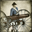
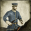
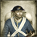
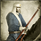
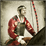
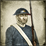

Sword Infantry
Sword Infantry
These units excel in close-quarters melee and are vulnerable to cavalry and bow or matchlock-armed units.
- Siege Units
Armed with weapons designed for dealing with castles and buildings, siege units are vulnerable in melee and to cavalry.
- General
The general gives a big morale boost to nearby friendly troops, but his army will suffer morale penalty if he is killed. Generals are best kept near frontlines to boost nearby troops, but should be protected by other units.
- Light Infantry
Light infantry are sharpshooters and very good at screening the main battle line, although weak in melee. Their role involves advancing before the main body of the army to flush out enemy ambushes and thin their ranks, then withdrawing behind the main line when threatened.
- Spear Cavalry
These units have a deadly charge but are vulnerable in prolonged melee. They are good in combat against other cavalry but generally weak when fighting yari infantry.
- Elite Infantry
Elite infantry are crack troops and provide a morale boost to nearby friendly units. Veterans of many hard battles, they can be relied upon to hold their position come what may.
 Spear Infantry
Spear Infantry
These units are excellent when fighting cavalry, due to the angle at which their weapons are held. They are vulnerable to attack by katana units and weak against bow or matchlock-armed units.
- Missile Cavalry
These units are excellent for harassing enemies from a distance but are poor in melee. As they are able to fire and re-position they are difficult to pin down but should always be kept away from concentrated enemy missile units.
 Special Infantry
Special Infantry
These units perform very specialised tasks on the battlefield and are vulnerable to units who perform broader roles.
 Militia Infantry
Militia Infantry
Militia infantry are cheap units but are of variable quality. Ideal for garrison duties, they can also bolster an army's numbers if needs be and, if well led, may surprise a complacent enemy.
 Bow Infantry
Bow Infantry
These units are fast-firing, long range missile units that are extremely vulnerable to cavalry and weak when in melee. On impact, arrows are more accurate but less damaging overall than matchlock balls.
- Line Infantry
Line infantry are excellent all-round units who form the main battle line. Thinner lines maximise firepower but are vulnerable to charges. The primary function of line infantry is to present as great a concentration of musket fire as possible. The rest of the army can then operate around this stable platform.
 Matchlock Infantry
Matchlock Infantry
These units are armed with slow-firing but deadly matchlock guns. They are vulnerable to cavalry charges and are generally weak in melee.
 Sword Cavalry
Sword Cavalry
These units are extremely effective melee cavalry and are strong against all infantry except yari-armed units. They are vulnerable to missiles and yari cavalry.
 Torpedo Boat
Torpedo Boat
Upgraded version of gunboat. Can use torpedoes against heavy, slow ships. Excellent at coastal defence.
 Gunboat
Gunboat
Small, lightly-armed vessels with only a few guns, used for coastal patrols.
 Ironclad
Ironclad
Heavy warships with armour plates to protect against explosive shells. Strong, slow vessels only vulnerable to piercing shells.
 Frigate
Frigate
Strongest non-ironclad ships, principal armament mounted on a single deck. Slow, heavy vessels.
 Corvette
Corvette
Lightly-armed warships with a single gun deck. Relatively fast but with a weak hull when compared to frigates and ironclads.
- Multiplayer Units
All the units available in multiplayer are listed here by recruitment dojo.